원본 이미지 속 인물의 옷 영역을 브러시로 지정한 뒤, 참조 의상 이미지의 스타일로 교체하는 기능입니다. 얼굴·포즈·배경은 유지하면서 의상 색상·형태·분위기를 빠르게 바꿔볼 수 있습니다.
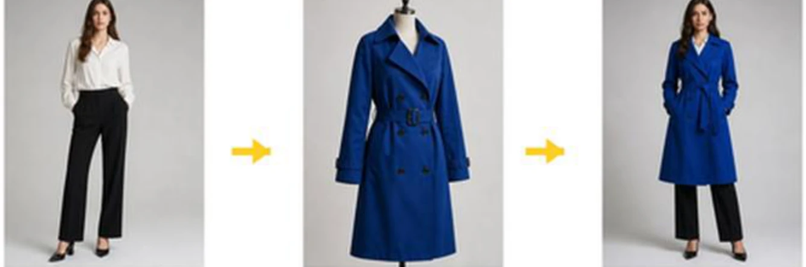
재촬영 없이 같은 인물에게 여러 의상 시안을 적용해 비교하기 위해 사용합니다. 의상 선택·스타일링 방향·광고/룩북 콘셉트를 빠르게 검토할 수 있어 제작 전 의사결정 시간이 줄어듭니다.
얼굴·포즈·배경은 원본 그대로 두고 의상만 교체합니다. 같은 인물의 일관성을 유지한 채 다양한 룩을 만들 수 있어, 모델 컷을 다시 찍지 않고도 시안을 빠르게 늘릴 수 있습니다.
컬러 톤·실루엣·소재 방향을 시각화한 시안을 짧은 시간 안에 다수 확보해 팀 내부 또는 클라이언트 의사결정 라운드를 단축합니다.
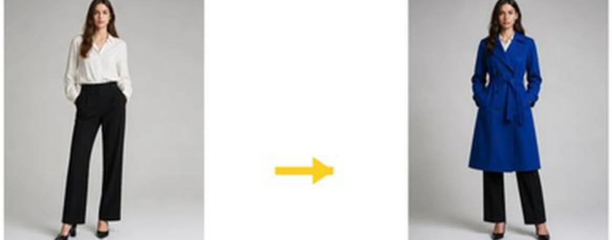
모델 컷은 좋지만 의상만 바꿔야 할 때, 제품 착용 시안을 빠르게 만들어야 할 때 적합합니다. 브랜드 룩북·패션 광고·캐릭터 의상 콘셉트·스타일 가이드 제안서에 활용할 수 있습니다.
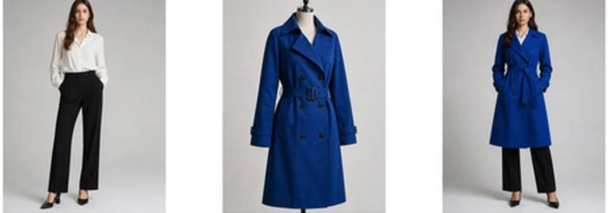
같은 모델에 시즌 의상 라인업을 입혀 일관된 톤의 룩북 시안을 빠르게 구성합니다.
제품 착용 컷을 다양한 컬러·실루엣 옵션으로 시뮬레이션해 광고·상세 페이지 후보 컷을 확보합니다.
드라마·영화·게임 캐릭터의 의상 시안을 동일 인물·동일 포즈에서 비교 검토합니다.
스타일링 방향을 비주얼로 제시하는 제안서·기획안의 첨부 자료를 신속히 만듭니다.
샘플 제작 전 단계에서 의상이 실제로 입혀진 모습을 미리 검토합니다.
기존 자산을 재활용해 동일 인물의 의상을 빠르게 바꿔 새로운 시안으로 재구성합니다.
왼쪽 세로 메뉴에서 티셔츠 모양 아이콘을 클릭합니다. 해당 메뉴가 ClothSwap 기능입니다.
화면 좌측 세로 메뉴 영역에 기능별 아이콘이 정렬되어 있습니다. 이 중 티셔츠 모양 아이콘이 ClothSwap 진입점입니다.
티셔츠 아이콘을 클릭하면 ClothSwap 작업 화면이 열립니다. 상단에 ClothSwap 제목과 안내 문구가 표시되어 현재 화면이 의상 교체 화면임을 확인할 수 있습니다.
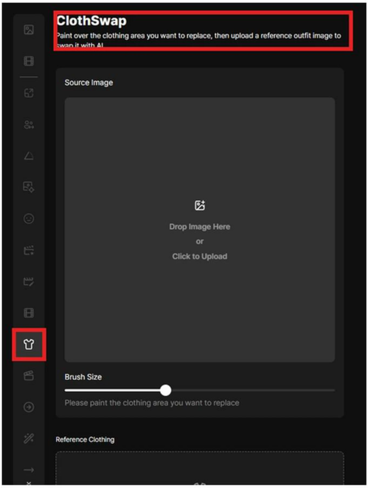
왼쪽에는 입력 영역, 오른쪽에는 결과 영역이 배치됩니다. 처음 진입한 직후에는 결과 영역이 비어 있는 상태입니다.
왼쪽 패널에는 Source Image, Brush Size, Reference Clothing, Generate 버튼이 위에서 아래 순으로 배치됩니다. 작업은 항상 이 순서로 진행됩니다.
오른쪽에는 생성된 결과 카드가 표시됩니다. 첫 진입 시에는 결과 영역이 비어 있으며, Generate 이후부터 카드가 누적됩니다.
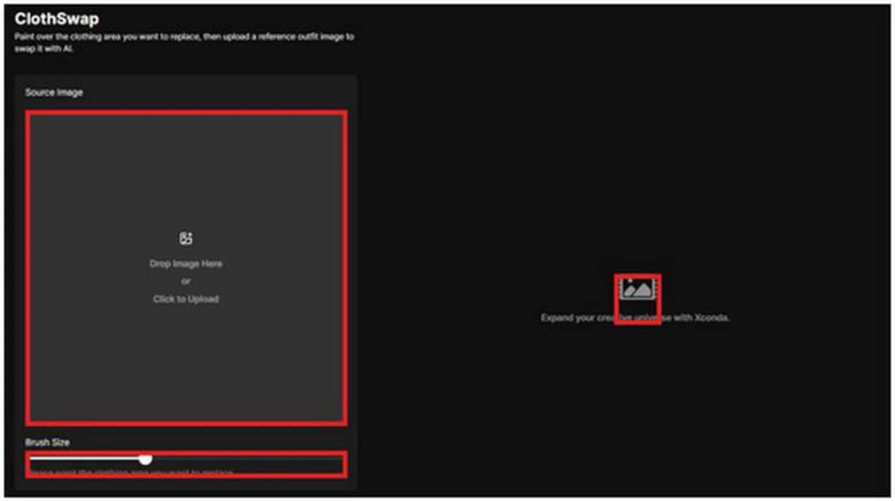
Drop Image Here 또는 Click to Upload로 옷을 바꿀 원본 이미지를 업로드합니다.
이미지 영역에 파일을 드래그&드롭하거나, 영역을 클릭해 로컬 파일을 선택합니다. 업로드가 완료되면 이미지가 미리보기로 표시됩니다.
옷 전체가 잘 보이고, 팔과 몸의 경계가 뚜렷한 이미지일수록 교체 결과가 안정적입니다. 강한 음영·과도한 크롭·심한 포즈 왜곡은 결과 품질을 떨어뜨릴 수 있습니다.
업로드한 이미지는 우측 상단 X 버튼으로 제거하고 다시 선택할 수 있습니다.
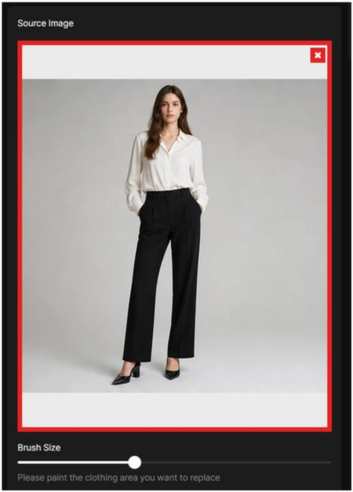
Brush Size 슬라이더로 브러시 크기를 조절합니다. 넓은 옷 영역은 크게, 옷깃이나 소매처럼 경계가 섬세한 부분은 작게 조절해 칠합니다.
상의·하의 중심부처럼 넓고 평평한 면은 브러시를 크게 잡아 빠르게 칠합니다. 큰 면적은 큰 브러시로 효율을 확보합니다.
옷깃·소매·허리선·단추 라인처럼 경계가 섬세한 부분은 브러시를 작게 줄여 정밀하게 칠합니다. 경계가 흐려지면 결과에 원본 의상이 일부 남을 수 있습니다.
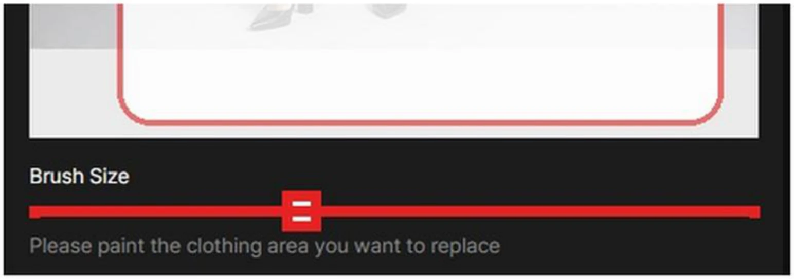
Source Image 위에서 바꿀 옷 부분을 브러시로 칠합니다. 칠한 영역만 교체 대상이 되므로, 옷 전체를 꼼꼼히 지정합니다.
브러시로 표시한 영역이 그대로 교체 대상이 됩니다. 빠뜨린 부분은 원본 의상이 남을 수 있으므로 옷 전체를 꼼꼼히 지정해야 합니다.
옷의 본체뿐 아니라 옷깃·소매 끝·밑단까지 포함해 칠합니다. 경계 부분이 빠지면 원본 옷의 외곽선이 결과에 그대로 비칠 수 있습니다.
얼굴·손·헤어·배경은 브러시 영역에서 제외합니다. 이 부분이 칠해지면 원본 인물의 형태가 의도와 다르게 변형될 수 있습니다.
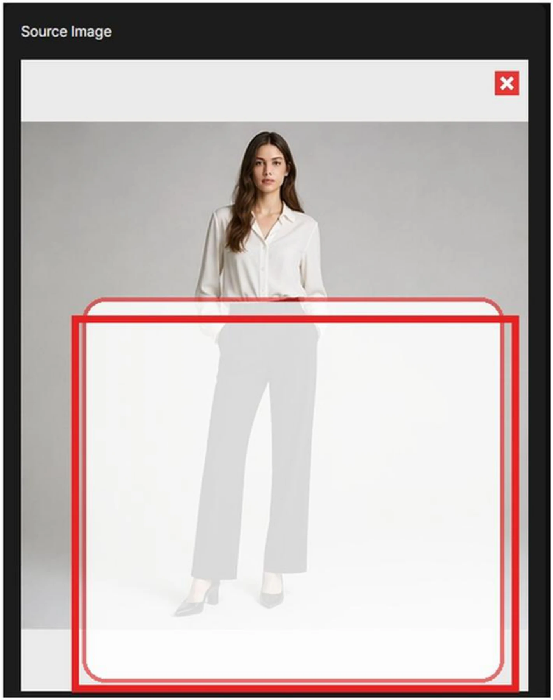
Reference Clothing 영역에는 새로 적용할 의상 이미지를 업로드합니다. 참조 의상이 없으면 Generate 버튼은 비활성화 상태로 유지됩니다.
하단 Reference Clothing 영역에 옷걸이 형태의 빈 슬롯이 표시됩니다. 이 슬롯에 의상 이미지를 업로드합니다.
Source Image · 브러시 영역 · Reference Clothing 세 가지가 모두 갖춰져야 Generate 버튼이 활성화됩니다. 하나라도 비어 있으면 버튼은 비활성화됩니다.
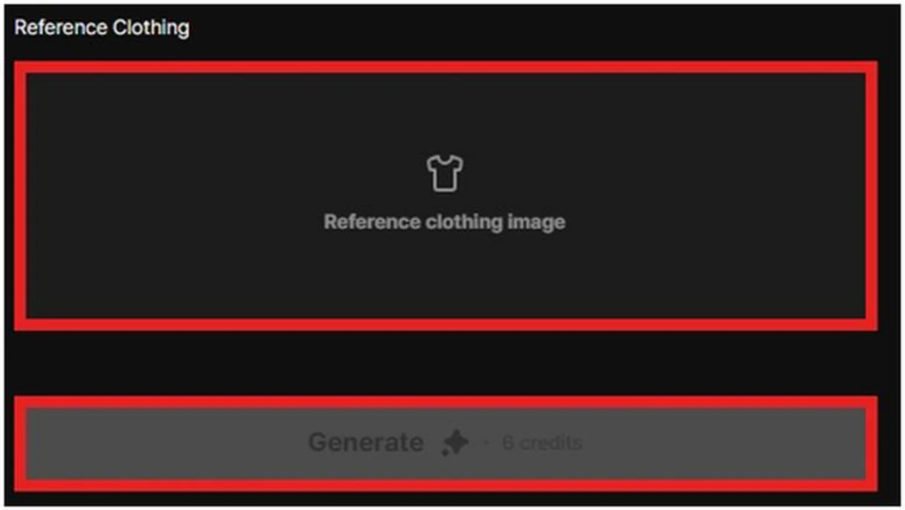
참조 의상 이미지는 옷의 색상·형태·소재감·스타일 방향을 결과에 전달하는 역할을 합니다. 어떤 이미지를 넣느냐에 따라 결과의 분위기가 결정됩니다.
참조 의상 이미지는 결과에 적용될 색상·형태·소재감·스타일 방향을 전달합니다. 결과 인물에 “이런 옷을 입힌다”라는 시각적 지시문 역할을 합니다.
마네킹·평면 컷 등 의상이 단독으로 잘 보이는 이미지가 권장됩니다. 의상 외 요소가 많을수록 의도하지 않은 디테일이 결과에 섞일 수 있습니다.
업로드한 참조 이미지는 우측 상단 X 버튼으로 제거하고 다른 이미지로 다시 선택할 수 있습니다.
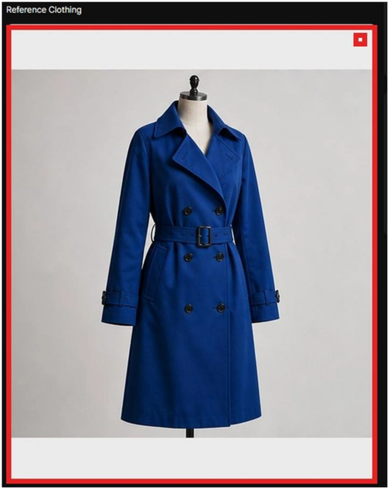
Source Image, 브러시 영역, Reference Clothing이 모두 준비되면 Generate 버튼을 누릅니다. 현재 테스트 화면 기준으로 1회 생성에 6 credits가 사용됩니다.
Source Image, 브러시 영역, Reference Clothing 세 가지가 모두 채워져야 Generate가 활성화됩니다.
현재 테스트 화면 기준 1회 생성에 6 credits가 차감됩니다. 잔여 크레딧이 부족하면 생성이 진행되지 않습니다.
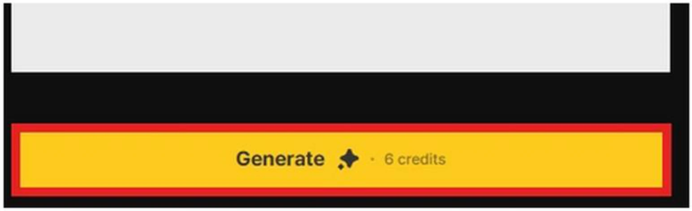
Generate를 누르면 “Would you like to generate an image?” 확인 팝업이 표시됩니다. OK는 생성 시작, Cancel은 이전 화면 복귀입니다.
OK를 누르면 실제 생성이 시작되고 크레딧이 차감됩니다. 생성 중에는 결과 영역에 진행 상태가 표시됩니다.
Cancel을 누르면 생성하지 않고 이전 화면으로 돌아갑니다. 입력값은 그대로 유지되어 바로 수정·재시도가 가능합니다.
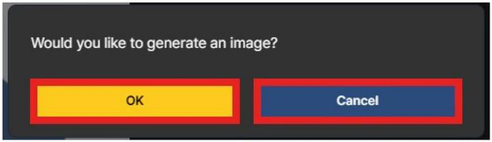
생성이 끝나면 오른쪽 결과 영역에 결과 이미지가 카드 형태로 표시됩니다. 여러 번 생성하면 결과 카드가 아래로 누적되어 서로 비교할 수 있습니다.
생성이 끝나면 오른쪽 결과 영역에 결과 카드가 하나 추가됩니다. 카드에는 결과 이미지가 썸네일 형태로 들어갑니다.
여러 번 생성하면 결과 카드가 아래로 차곡차곡 쌓여 누적됩니다. 같은 인물에 적용한 여러 의상 시안을 한 화면에서 직접 비교할 수 있습니다.
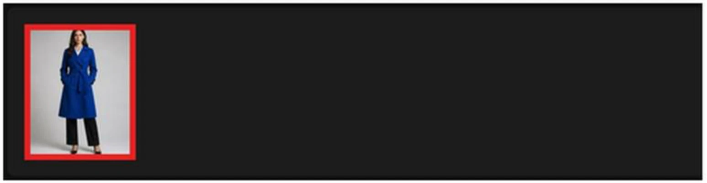
결과 이미지는 원본 인물의 얼굴과 포즈를 유지하면서, 지정한 옷 영역에 참조 의상의 색과 형태를 반영합니다. 최종 사용 전에는 옷 경계·소매·목 주변·가방끈처럼 겹치는 요소를 확인합니다.
결과 이미지는 원본 인물의 얼굴 인상과 포즈를 유지하면서, 마스크로 지정한 옷 영역에 참조 의상의 색과 형태를 입힙니다.
참조 의상의 컬러·실루엣·디테일이 결과 옷에 반영됩니다. 다만 100% 동일하지는 않을 수 있으므로 여러 번 생성해 가장 적합한 결과를 선택합니다.
최종 사용 전에는 옷 경계·소매·목 주변·가방끈처럼 겹치는 요소가 자연스럽게 처리되었는지 확인합니다. 어색한 부분이 있으면 마스크를 다시 조정해 재생성합니다.
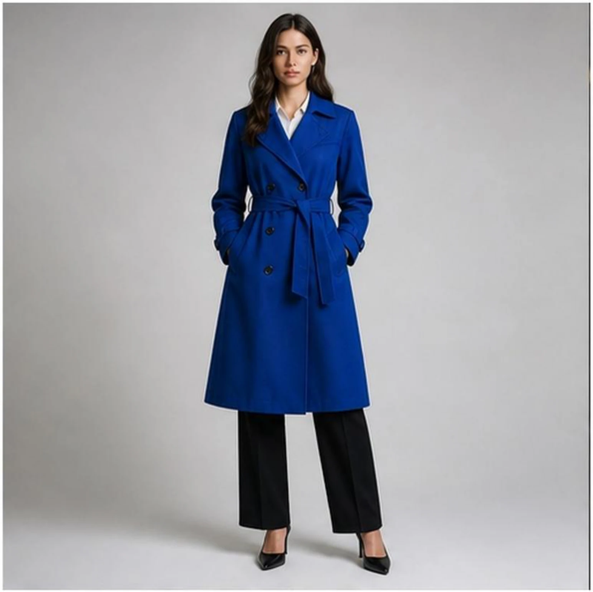
결과 카드 위에 마우스를 올리면 다운로드 아이콘과 삭제 아이콘이 표시됩니다. 다운로드 아이콘은 결과 이미지 저장, 휴지통 아이콘은 선택한 결과 삭제입니다.
다운로드 아이콘을 누르면 해당 결과 이미지가 로컬 파일로 저장됩니다. 최종 채택 시안을 외부에서 사용할 때 이 버튼을 사용합니다.
휴지통 아이콘은 선택한 결과 카드를 삭제합니다. 불필요한 시안은 정리해 결과 영역을 깔끔하게 유지할 수 있습니다.
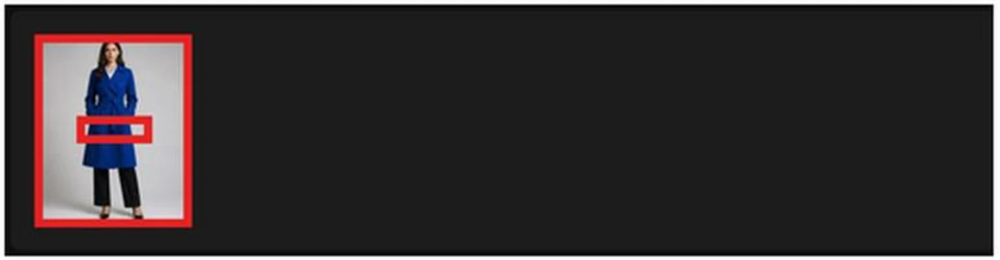
휴지통 아이콘을 누르면 “Delete this media?” 확인 팝업이 표시됩니다. Delete를 누르면 삭제되고, Cancel을 누르면 결과가 유지됩니다.
Delete를 누르면 선택한 결과 카드가 실제로 삭제됩니다. 삭제된 결과는 복구되지 않으므로 신중히 결정합니다.
Cancel을 누르면 결과가 그대로 유지됩니다. 다른 시안과 비교가 끝나기 전까지는 일단 보관해 두는 편이 안전합니다.
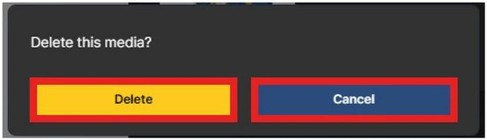